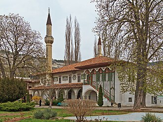

Overview
La grande mosquée est un bâtiment religieux en Crimée. Fondée en 1532 par Mengli Ier Giray, elle se trouve à Bakhtchissaraï et fait partie du caravansérail Hansaray.
جامع خان بيك هو مسجد يقع في باختشيساراي في شبه جزيرة القرم، وهو واحد من أكبر المساجد في شبه جزيرة القرم ومن المباني الأولى في قصر خان. تم بناء المسجد عام 1532 على يد صاحب جيراي الأول وحمل اسمه في القرن السابع عشر.
The Big Khan Mosque is located in Bakhchysarai, Crimea, and is part of the Bakhchysarai Palace. It is one of the largest mosques in Crimea and one of the first buildings of the Khan's Palace. The mosque was built in 1532 by Sahib I Giray and bore his name in the 17th century.
Büyük Han Camii, Bahçesaray'da yer alan Hansaray saray kompleksinin içerisinde bulunan tarihi cami. Kırım'ın en büyük camilerinden ve Hansaray'ın ilk binalarından biridir.
Masjid Katedral Besar Khan, atau yang dikenal dengan Masjid Kekhanan Krimea adalah sebuah masjid bersejarah yang berada di sebelah barat kawasan Istana Bakhchisaray, kota Bakhchysarai, Republik Otonom Krimea, Ukraina. Masjid ini merupakan salah satu masjid terbesar di Semenanjung Krimea dan salah satu bangunan pertama di dalam kompleks Istana Kekhanan. Masjid ini awalnya dibangun pada tahun 1532 atas perintah Sultan Sahib I Giray dan menyandang namanya pada abad ke-17.
{{نقل:صارف:محمد شعیب/city|بڑا خان مسجد|لاطینی: Big Khan Mosque||کریمیا
Die Große Chanmoschee ist eine 1532 vom Chan Sahib I. Giraj im osmanischen Architekturstil errichtete Moschee in der ukrainischen Stadt Bachtschyssaraj innerhalb der Autonomen Republik Krim; sie ist Teil des Chanpalastes, das Sitz des Krimchanats war. Die Moschee trug bis zum 17. Jahrhundert den Namen von Sahib I. Giraj.
La Grande moschea del Khan si trova a Bachčisaraj in Crimea, ed è parte del Palazzo dei Khan. È una delle più grandi moschee della Crimea e uno dei primi edifici del palazzo di Khan. La moschea fu costruita nel 1532 da Sahib I Giray e portò il suo nome nel XVII secolo.
大汗清真寺，是位于俄羅斯克里米亚共和国或乌克兰克里米亚自治共和国巴赫奇萨赖市的一座清真寺，属于巴赫奇萨赖汗宫的一部分。它是克里米亚最大的清真寺之一，也是王宫最早的建筑物之一。该寺由克里米亚汗沙希布一世·格來建于1532年，17世纪命名。
Больша́я ха́нская мече́ть или Большая Дворцовая мечеть — мечеть Ханского дворца в Бахчисарае.
On the map
Documents and links
- Wikipédia — Français
- Wikipédia — العربية
- Wikipédia — English
- Wikipédia — Türkçe
- Wikipédia — Bahasa Indonesia
- Wikipédia — اردو
- Wikipédia — Deutsch
- Wikipédia — Italiano
- Wikipédia — 中文
- Wikipédia — Русский
- Wikidata — Q4905930
Data: Wikidata (CC0), updated every 3 months. The year is the earliest known construction date of the building: for a building that became a mosque later (such as Hagia Sophia), it is that of the original building. Photos: Wikimedia Commons, author and licence on each photo's page.